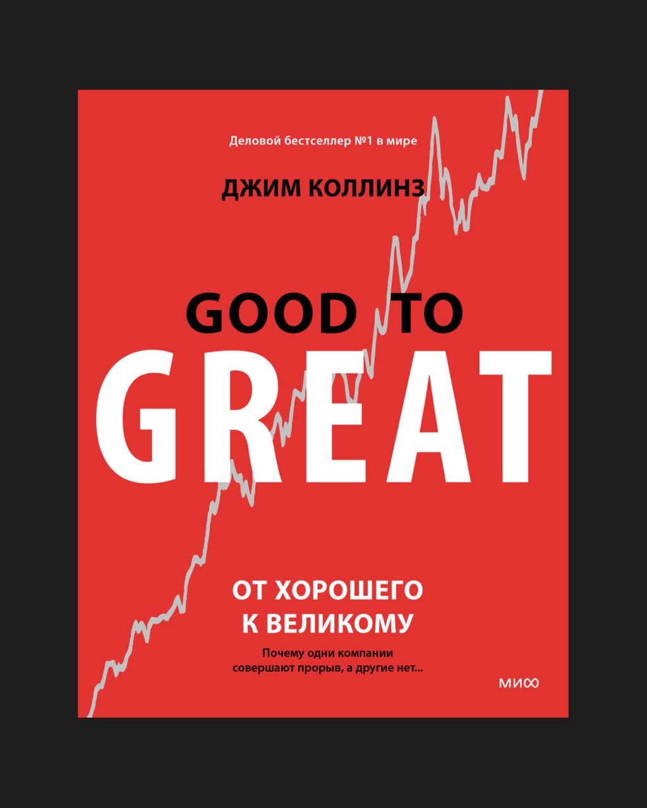

Коллинз много лет исследовал, почему одни компании становятся великими, а другие — нет. Он изучал, что у них общего, какие принципы действительно работают и что отличает настоящих лидеров от номинальных.
⠀
Я познакомился с книгами Коллинза в начале карьеры, и многие принципы этой книги легли в основу моего управленческого подхода.
В карточках — выжимка ключевых идей. Они будут полезны, если управляете бизнесом или выстраиваете команду.
Карточки
Лидерство пятого уровня
Коллинз описывает лидеров, которые построили великие компании, как людей с редким сочетанием качеств: личной скромности и фанатичной решимости. На публике они говорят: «Это сделала команда», но внутри компании именно они задают ритм, держат фокус и принимают ключевые решения. Их сила не в харизме или внешней яркости, а в характере, стойкости и глубоком ощущении ответственности за результат. Пример - Дарвин Смит из Kimberly-Clark. Он был настолько скромным, что его не всегда узнавали на внутренних встречах. Но именно он принял смелое решение изменить направление бизнеса и превратил компанию из умирающего производителя бумаги в лидера потребительских брендов.
Столкновение с реальностью
Одна из ключевых черт сильной компании - способность честно смотреть на происходящее. Не занижать риски, не рационализировать ошибки, не тянуть с решениями. Коллинз подчеркивает: «Не путай веру в успех с отрицанием фактов» - оптимизм не должен становиться самообманом. Честность с собой - основа стратегического выбора, без нее нельзя ни учиться, ни развиваться.
Концепция ежа
Чтобы расти, нужно не расширяться, а фокусироваться. Великие компании выбирают одно направление и придерживаются его. Коллинз предлагает три вопроса, которые помогают определить стратегический фокус: 1. В чём мы можем быть лучшими в мире? 2. Что нас по-настоящему увлекает? 3. Где мы зарабатываем больше всего на единицу вложенных усилий? Пересечение этих трех ответов - то, вокруг чего стоит выстраивать всю стратегию. Все остальное - отвлекающий шум и распыление ресурсов.
Маховик вместо рывков
Великие результаты - не следствие одного гениального решения Это эффект накопления. Коллинз считает, что компании не совершают один решающий прорыв - они делают тысячи небольших шагов в одном направлении. Сначала - медленно, потом - все быстрее. Этот процесс он называет маховиком: усилия накапливаются, и в какой-то момент движение становится необратимым, компания начинает расти по инерции.
Жесткий кадровый фильтр
Сильная команда начинается с отбора Коллинз подчеркивает, что великие компании не держат «почти подходящих», они не надеются, что кто-то изменится со временем. Каждый неподходящий человек - это риск для всей культуры: ценности размываются, планка снижается.
Технология - как усиление, не как КОСТЫЛЬ
Великие компании не гонятся за новыми технологиями ради впечатления, они внедряют только то, что усиливает их работающую систему. Технологии имеют смысл только в контексте стратегии. Без четкого вектора они становятся дорогими отвлечениями.
Великие действуют из убежденности, а не из страха
Великие компании делают выбор, исходя из стратегической уверенности, даже если он сложный, рискованный и непопулярный. Средние же держатся за привычное: боятся потерять, боятся перемен, боятся ошибиться. Коллинз показывает это на примере Kimberly- Clark: компания продала основной бизнес (производство бумаги), чтобы сосредоточиться на потребительских брендах. Решение вызвало критику, но стало поворотной точкой роста для компании. Выбор, сделанный из страха, сохраняет статус- кво. Выбор из убежденности - создает возможности роста.